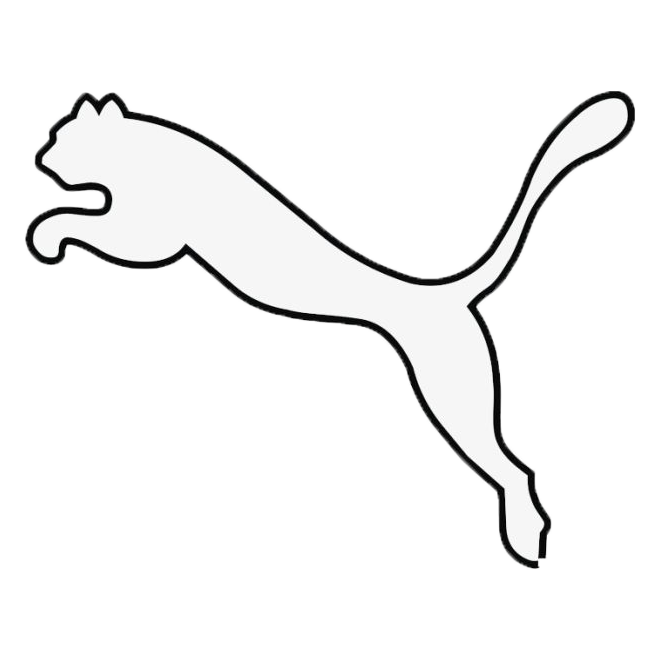
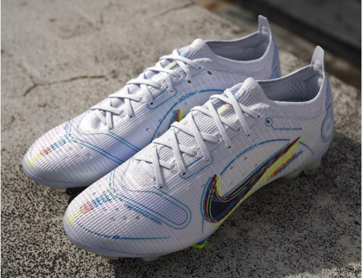
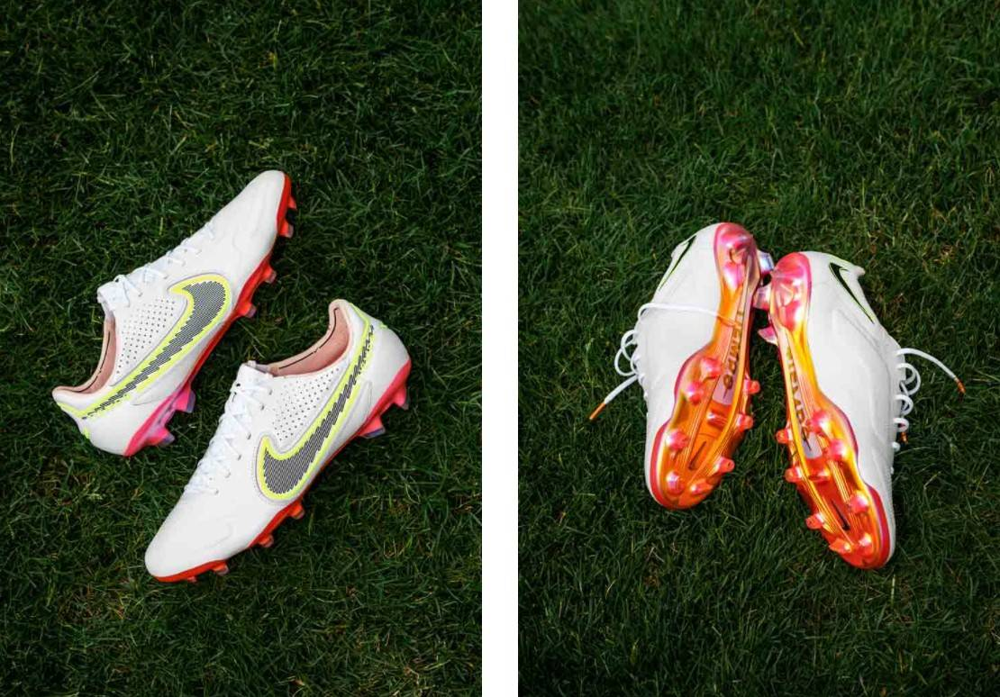
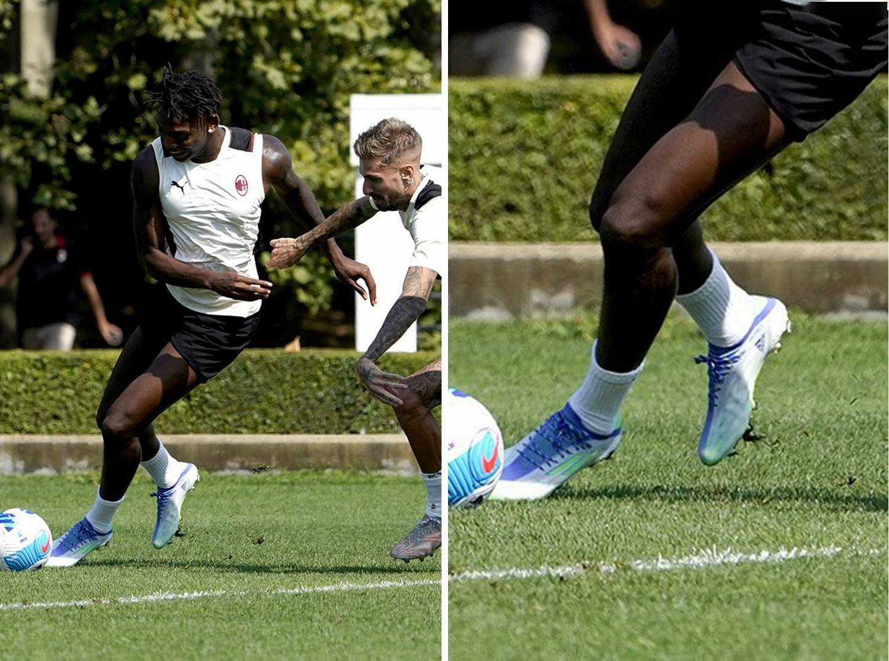
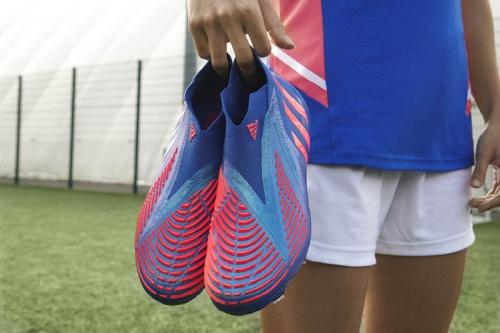
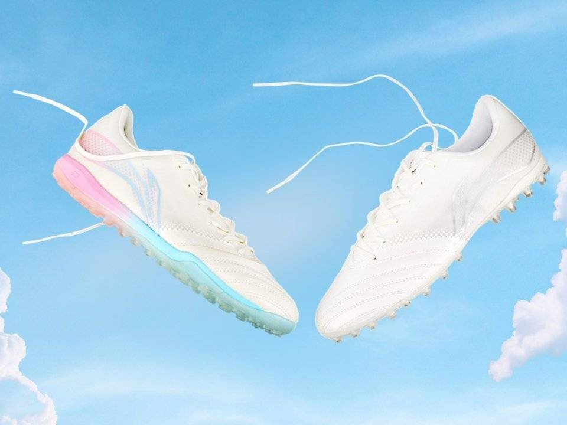
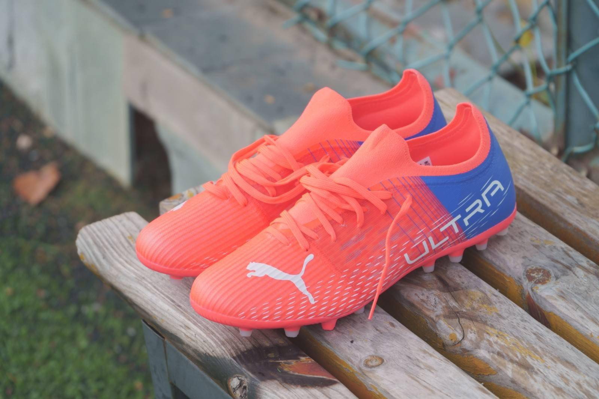
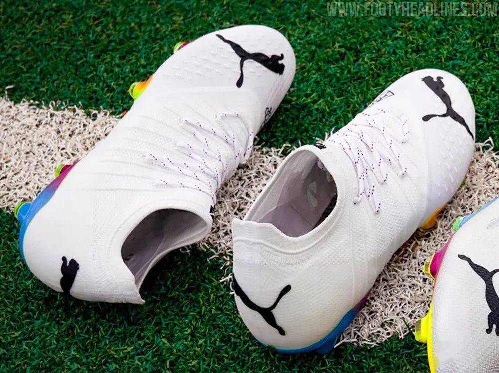

刺客(Mercurial)，最初诞生于1998年。为了设计出一款与罗纳尔多充满爆发力的球风相符的球鞋，耐克公司把目光投向了跑道。早期的概念包括在足球鞋的底部装上类似跑鞋的鞋钉，旨在突出大幅度为足球鞋减重的目标。
摒弃了使用袋鼠皮的固有传统，而是采用一种人工合成的新材质取而代之。同时，重大突破是将鞋底的厚度从当时业内普遍采用的3毫米压缩为革命性的1.75毫米。
“在当时看来，一切都是那么令人震撼！从外观到材质都让人们叹为观止，那真是个激动人心的时刻。”诚然，在足球鞋迭代速度如此之快的今天，刺客足球鞋在如今足坛仍然独领风骚。
传奇(Tiempo)，最初诞生于2005年。前身为premier，主打舒适和掌控.在加州举行的世界杯决赛中，有近一半的人都穿着耐克Premier球鞋，这是一个传奇的开始，直到今天仍然很强大，Tiempo传奇9在全球最壮观的足球赛场上的巨星们的脚下展现得淋漓尽致。
发展至今，仍然采用“真皮”作为核心卖点，为数不多仍然坚持的系列。
传奇系列作为耐克系列中最持久的靴子继续前进，并且没有停止的迹象。
作为曾经Nike旗下足球鞋4大分支之一，没有刺客和传奇那样风风火火，但是也比已经停更的鬼牌要好。
Phantom、Phantom VSN1和2、Phantom GT2等等让暗煞系列得以延续。尤其是Phantom GT2，作为2021年最火的足球鞋之一，Phantom兼具速度和触感。
Phantom 和 Phantom VSN系列都加入传控属性，与传奇系列类似，也许当下思考暗煞系列的定位，才是出路。

刺客14，采用Flyknit织物鞋面，更轻更薄在保证速度的同时，也兼顾了触球球感。 刺客14有鞋底的全新设计，穿着它跑起来非常舒适省力，鞋身支撑性超强，急停变相收放自如.

传奇9，史上最轻的传奇,穿着轻盈舒适透气。注重真皮球鞋的传统、自然的穿着感与细腻的触球感。大底支撑好，对脚型的贴合强。真皮材质包裹能力会欠缺，耐久度同理。 适合触感至上的技术流球员，也适合喜欢传统真皮鞋款的球员。
猎鹰(Predator)的源头要追溯到1994年，当时阿迪达斯首次推出了一款附着有大面积硅胶摩擦条的球鞋，用来帮助球员们获得更多对球的控制力。黑色的鞋面和白色的三道杠以及红色的细节装饰从此奠定了猎鹰经典配色的基调，这也是猎鹰辉煌的开始。
猎鹰如今已经更新到14代，中间经历了改名字(ACE)、出支线，如今回归猎鹰，从18年回归开始，用年份命名，如今的猎鹰21是当之无愧的传控型新宠儿。
Adidas超顶球鞋的无鞋带设计仍然是其一个很大的卖点。
X系列，前身是f50，和猎鹰一样用年份开始命名。曾经的X系列是全能性球鞋，但如今的X和nike的刺客作为同样定位，即：对速度的极致追求以及赤足感。虽然有轻盈性、启动快的特点，但是极致的追求也是褒贬不一。
X20推出X-Ghosted，褒贬不一，被戏称为“塑料鞋”；X21推出X-speedflow，对于“塑料鞋身”的极致追求仍然不变，轻、快仍然是主旋律。这既是很多人不喜欢X的原因，也是很多人喜欢X的原因。
X系列合并了主打传控的嫩妹子(Nenmeziz)，在讲求全能的今天，X系列仍然出淤泥而不染，特立独行。

Speedflow+，即X系列的2021新作。可以与刺客14、Phantom GT2并称为2021年最火的三双球鞋 adidas的特有的超顶球鞋的无鞋带设计，更能适应球员的脚型。同时因为梅西之前代言的嫩妹子并入X，X也将是adidas的着力培养的系列。

PREDATOR EDGE是Predator系列2021年推出最新鞋款， EDGE足球鞋首次推出了ZONE SKIN控球区创新设计，旨在助力足球变向、旋转和控球。精心设计的橡胶棱纹条分布在从脚背到鞋头的四个控球区，力求有针对性地提升控球感受，助球员抢占比赛先机，自信掌控赛场。

李宁铁2.5。将火热的篮球鞋“迈阿密”配色融入足球鞋，配置有待提高，国货决心！

Ultra系列是puma主推系列，主打掌控，主要代言人是内马尔。Puma特有的MG大底也更适合中国的草地。

Future系列也是puma主推系列，敏捷性球员首选，博尔特、格里兹曼等球员代言。